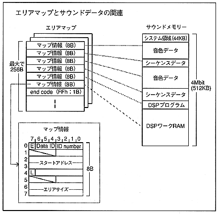

Normally, if there is two map information of tone data and sequence data in one area map, sequence playback is possible, but if you divide frequently used songs and SE etc. into different arrangements, memory efficiency and development efficiency will be improved You can build a good system.
As long as the game scene changes, the sound will change, so you need as many area maps as there are game scenes. However, the area map mentioned here is an area map viewed from the sound, so it does not necessarily correspond to the game scene one-on-one. If the sound of the game changes, the area map does not need to be changed if the sound is the same, and the area map does not need to be changed if only part of the sound data needs to be replaced.
